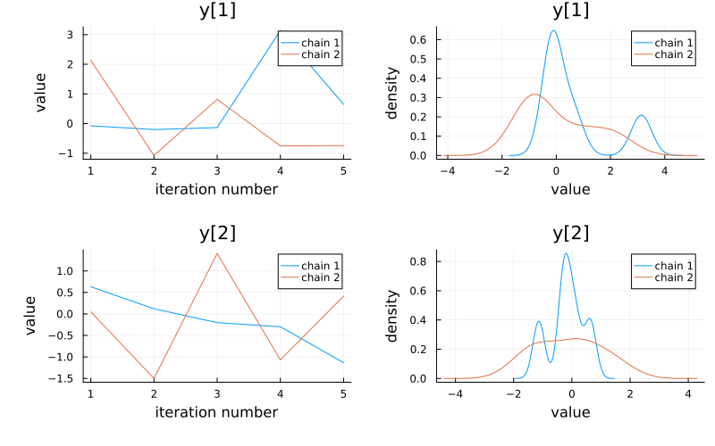
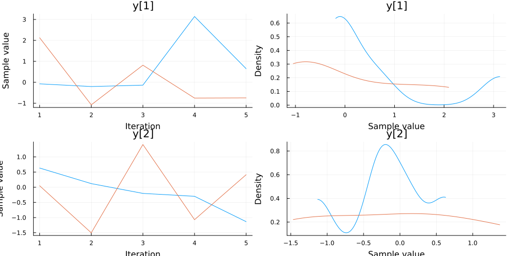

Migrating from MCMCChains
This page contains a few examples of how to adapt code written for MCMCChains to work with FlexiChains instead. These are collated from my experience updating Turing's docs and tests.
If you have any other questions or usage patterns, please do open an issue! I will be more than happy to add more examples here.
Setup
For the purposes of these docs, we will have to write a function, prior_chain, that creates a chain without using Turing explicitly. This is because Turing depends on FlexiChains, and if we make a breaking release of FlexiChains, then the docs will break as there will not yet be a version of Turing that is compatible.
The code is shown here for demonstration purposes, but don't worry about the implementation of this too much! It is really the same as calling sample(model, Prior(), MCMCSerial(), n_iters, n_chains; chain_type=Tchn).
Prior chain sampling
using DynamicPPL, AbstractMCMC, MCMCChains, FlexiChains, Random, Distributions
function prior_chain(
rng::Random.AbstractRNG,
model::DynamicPPL.Model,
niters::Int,
nchains::Int,
::Type{Tchn}
) where {Tchn}
vi = DynamicPPL.OnlyAccsVarInfo()
vi = DynamicPPL.setacc!!(vi, DynamicPPL.RawValueAccumulator(true))
ps = [DynamicPPL.ParamsWithStats(last(DynamicPPL.init!!(rng, model, vi, InitFromPrior(), UnlinkAll()))) for _ in 1:niters, _ in 1:nchains]
return AbstractMCMC.from_samples(Tchn, ps)
endprior_chain (generic function with 1 method)A1. Extracting scalar-valued samples
@model f() = x ~ Normal()
model = f()
mchain = prior_chain(Xoshiro(468), model, 5, 2, MCMCChains.Chains)
fchain = prior_chain(Xoshiro(468), model, 5, 2, FlexiChains.VNChain)MCMCChains
mchain[:x]2-dimensional AxisArray{Float64,2,...} with axes:
:iter, 1:1:5
:chain, 1:2
And data, a 5×2 Matrix{Float64}:
0.0720089 -0.203115
-0.0740438 0.119206
0.632776 -0.371982
-0.979978 1.50102
1.61152 -0.136367gives you an niters × nchains AxisArray of samples for the variable x.
FlexiChains
It is recommended to index into the chain using VarNames because this is clearer:
fchain[@varname(x)]┌ 5×2 DimArray{Float64, 2} Parameter(x) ┐
├───────────────────────────────────────┴───────────── dims ┐
↓ iter Sampled{Int64} 1:5 ForwardOrdered Regular Points,
→ chain Sampled{Int64} 1:2 ForwardOrdered Regular Points
└───────────────────────────────────────────────────────────┘
↓ → 1 2
1 0.0720089 -0.203115
2 -0.0740438 0.119206
3 0.632776 -0.371982
4 -0.979978 1.50102
5 1.61152 -0.136367This will also give you an niters × nchains matrix of samples but it is a DimArray instead.
You can also use fchain[:x] as long as the Symbol can be unambiguously resolved to a key in the chain.
A2. Extracting an element of an array-valued sample
@model g() = x ~ filldist(Normal(), 2, 3)
model = g()
mchain = prior_chain(Xoshiro(468), model, 5, 2, MCMCChains.Chains)
fchain = prior_chain(Xoshiro(468), model, 5, 2, FlexiChains.VNChain)MCMCChains
With MCMCChains, the array x will have been split up into its scalar elements. You can access, for example:
mchain[Symbol("x[1, 2]")]2-dimensional AxisArray{Float64,2,...} with axes:
:iter, 1:1:5
:chain, 1:2
And data, a 5×2 Matrix{Float64}:
0.632776 -0.496555
1.50102 0.41364
-0.298648 -0.555033
-0.241816 -0.472521
-1.50273 -0.0147581which again gives you an niters × nchains AxisArray of samples for the variable x[1, 2].
FlexiChains
With FlexiChains, the array x will be kept together as a single variable. There is no single variable in the chain that corresponds to x[1, 2]. However, you can still access the element x[1, 2] using VarNames.
fchain[@varname(x[1, 2])]┌ 5×2 DimArray{Float64, 2} Parameter(x[1, 2]) ┐
├─────────────────────────────────────────────┴─────── dims ┐
↓ iter Sampled{Int64} 1:5 ForwardOrdered Regular Points,
→ chain Sampled{Int64} 1:2 ForwardOrdered Regular Points
└───────────────────────────────────────────────────────────┘
↓ → 1 2
1 0.632776 -0.496555
2 1.50102 0.41364
3 -0.298648 -0.555033
4 -0.241816 -0.472521
5 -1.50273 -0.0147581(In fact you can also use other indexing patterns, such as fchain[@varname(x[end])] to get the last element of x.)
A3. Extracting array-valued samples
Consider the same model as above, but suppose we want the entire array of x values.
@model g() = x ~ filldist(Normal(), 2, 3)MCMCChains
With MCMCChains, you have to use the group function to subset the chain to variables that begin with x:
mchain_xonly = group(mchain, :x)Chains MCMC chain (5×6×2 Array{Float64, 3}):
Iterations = 1:1:5
Number of chains = 2
Samples per chain = 5
parameters = x[1, 1], x[2, 1], x[1, 2], x[2, 2], x[1, 3], x[2, 3]
internals =
Use `describe(chains)` for summary statistics and quantiles.
This gives you a Chains object, whose internal data has dimensions niters × nparams × nchains. Here, nparams is the number of scalar parameters that begin with x (in this case, 6). The internal data can be accessed by converting the Chains object to an array.
To get, for example, the first sample of x, you can then do:
x_vec = Array(mchain_xonly[1, :, 1])
x = reshape(x_vec, 2, 3)2×3 Matrix{Float64}:
0.0720089 0.632776 1.61152
-0.0740438 -0.979978 -0.203115If you want to get (for example) the mean of x, or an array of all x values, you will similarly need some combination of group + reshape or permutedims.
FlexiChains
With FlexiChains, you can directly access the entire array of x values using VarNames.
For example,
fchain[@varname(x)]┌ 5×2 DimArray{Matrix{Float64}, 2} Parameter(x) ┐
├───────────────────────────────────────────────┴───── dims ┐
↓ iter Sampled{Int64} 1:5 ForwardOrdered Regular Points,
→ chain Sampled{Int64} 1:2 ForwardOrdered Regular Points
└───────────────────────────────────────────────────────────┘
↓ → … 2
1 [1.40805 -0.496555 -1.06928; -0.101726 -0.754428 0.435984]
2 [-1.00153 0.41364 -0.600176; -0.74393 1.31731 -1.38092]
3 [0.975288 -0.555033 -1.51716; 2.05543 -1.07123 -0.878687]
4 [-0.263486 -0.472521 -1.13297; 0.0869281 0.14846 0.740819]
5 … [0.20722 -0.0147581 -0.26578; 0.85836 0.303728 -0.351962]returns a DimArray of dimensions niters × nchains where each element is a 2 × 3 array of samples for x.
To get the first sample of x you can either index into the DimMatrix above (i.e., fchain[@varname(x)][1, 1]), or you can directly index with
fchain[@varname(x), iter=1, chain=1]2×3 Matrix{Float64}:
0.0720089 0.632776 1.61152
-0.0740438 -0.979978 -0.203115If you need to process all x samples at once, you can also use
fchain[@varname(x), stack=true]┌ 5×2×2×3 DimArray{Float64, 4} Parameter(x) ┐
├───────────────────────────────────────────┴─────────── dims ┐
↓ iter Sampled{Int64} 1:5 ForwardOrdered Regular Points,
→ chain Sampled{Int64} 1:2 ForwardOrdered Regular Points,
↗ AnonDim Sampled{Int64} 1:2 ForwardOrdered Regular Points,
⬔ AnonDim Sampled{Int64} 1:3 ForwardOrdered Regular Points
└─────────────────────────────────────────────────────────────┘
[:, :, 1, 1]
↓ → 1 2
1 0.0720089 1.40805
2 0.119206 -1.00153
3 0.0702887 0.975288
4 -1.13486 -0.263486
5 0.171813 0.20722to get a DimArray of dimensions niters × nchains × 2 × 3, where the last two dimensions correspond to the dimensions of x.
A4. Subsetting a chain to specific parameters, iterations, or chains
@model function h()
x ~ Normal()
y ~ Normal()
z ~ Normal()
end
model = h()
mchain = prior_chain(Xoshiro(468), model, 5, 2, MCMCChains.Chains)
fchain = prior_chain(Xoshiro(468), model, 5, 2, FlexiChains.VNChain)MCMCChains
MCMCChains allows you to subset a chain simply by indexing into it as if it were a 3D array of dimensions niters × nparams × nchains.
This means that if you want to drop the first 2 iterations, and only retain the parameters x and y, you can for example do:
mchain_subset = mchain[3:end, [:x, :y], :]Chains MCMC chain (3×2×2 Array{Float64, 3}):
Iterations = 3:1:5
Number of chains = 2
Samples per chain = 3
parameters = x, y
internals =
Use `describe(chains)` for summary statistics and quantiles.
FlexiChains
With FlexiChains, parameter subsetting is done with a positional argument, but iteration and chain subsetting are done with keyword arguments.
Unfortunately, Julia does not (yet?) support begin and end in keyword arguments, so you will have to explicitly calculate what end should be.
n_iters = FlexiChains.niters(fchain) # or equivalently size(fchain, 1)
fchain_subset = fchain[[@varname(x), @varname(y)], iter=3:n_iters]╭─FlexiChain (3 iterations, 2 chains) ─────────────────────────────────────────╮
│ ↓ iter = 3:5 │
│ → chain = 1:2 │
│ │
│ Parameters (2) ── VarName │
│ Float64 x, y │
│ │
│ Extras (0) │
│ (none) │
╰──────────────────────────────────────────────────────────────────────────────╯A5. Subsetting the chain to parameters only
With MCMCChains you need to know that the parameters are stored in a section called :parameters, and extract that section specifically. (In general, a chain can have any section with any name, but Turing makes sure to create :parameters and :internals sections.)
MCMCChains.get_sections(mchain, :parameters)Chains MCMC chain (5×3×2 Array{Float64, 3}):
Iterations = 1:1:5
Number of chains = 2
Samples per chain = 5
parameters = x, y, z
Use `describe(chains)` for summary statistics and quantiles.
FlexiChains has a strict notion of parameters and other keys, so there is a dedicated function for this:
FlexiChains.subset_parameters(fchain)╭─FlexiChain (5 iterations, 2 chains) ─────────────────────────────────────────╮
│ ↓ iter = 1:5 │
│ → chain = 1:2 │
│ │
│ Parameters (3) ── VarName │
│ Float64 x, y, z │
│ │
│ Extras (0) │
│ (none) │
╰──────────────────────────────────────────────────────────────────────────────╯B1. Extracting summary statistics
MCMCChains has a few functions which notionally can do the same thing:
summarystats(mchain) # calculate summary stats
# Also:
# summarize(mchain) # same as summarystats for the most part
# describe(mchain) # prints them but returns nothingSummary Statistics
parameters mean std mcse ess_bulk ess_tail rhat e ⋯
Symbol Float64 Float64 Float64 Float64 Float64 Float64 ⋯
x 0.1409 1.1744 NaN NaN NaN 1.2648 ⋯
y 0.1947 1.2549 NaN NaN NaN 1.1048 ⋯
z -0.0787 1.0362 NaN NaN NaN 1.0867 ⋯
1 column omitted
FlexiChains only uses StatsBase.summarystats:
summarystats(fchain)╭─FlexiSummary (9 statistics) ─────────────────────────────────────────────────╮
│ iter collapsed │
│ chain collapsed │
│ ↓ stat = [mean, std, mcse, ess_bulk, ess_tail, rhat, q5, q50, q95] │
│ │
│ Parameters (3) ── VarName │
│ Float64 x, y, z │
│ │
│ Extras (3) │
│ Float64 logprior, loglikelihood, logjoint │
│ │
│ Summary │
│ param mean std mcse ess_bulk ess_tail rhat q5 … │
│ x 0.1409 1.1744 0.3714 10.0000 10.0000 1.5820 -1.0995 … │
│ y 0.1947 1.2549 0.4407 10.0000 10.0000 1.0728 -0.9571 … │
│ z -0.0787 1.0362 0.3277 10.0000 10.0000 0.9419 -1.6994 … │
╰──────────────────────────────────────────────────────────────────────────────╯Both MCMCChains and FlexiChains accept keyword arguments which give you more control over which statistics are calculated. For FlexiChains please see the summarising docs for more info.
B2. Extracting the mean of a scalar-valued variable
This applies to any statistic, not just the mean.
using LinearAlgebra
@model function k()
x ~ Normal()
y ~ MvNormal(zeros(2), I)
end
model = k()
mchain = prior_chain(Xoshiro(468), model, 5, 2, MCMCChains.Chains)
fchain = prior_chain(Xoshiro(468), model, 5, 2, FlexiChains.VNChain)MCMCChains
mmean = mean(mchain)Mean
parameters mean
Symbol Float64
x 0.1409
y[1] 0.1947
y[2] -0.0787
This returns a ChainDataFrame object, which is slightly confusing to work with (and isn't really documented at all). To actually access the mean value, you have to do
mmean[:x, :mean]0.14094667862080373There is a more direct way of getting the mean of a specific variable, which is to pass that as a second argument to mean:
mean(mchain, :x)0.14094667862080373FlexiChains
There are two ways to get the mean of x with FlexiChains, which are essentially equivalent.
The first way is to the mean of the entire chain and index into it.
fmean = mean(fchain)╭─FlexiSummary ────────────────────────────────────────────────────────────────╮
│ iter collapsed │
│ chain collapsed │
│ stat collapsed │
│ │
│ Parameters (3) ── VarName │
│ Float64 x, y[1], y[2] │
│ │
│ Extras (3) │
│ Float64 logprior, loglikelihood, logjoint │
│ │
│ Summary │
│ param │
│ x 0.1409 │
│ y[1] 0.1947 │
│ y[2] -0.0787 │
╰──────────────────────────────────────────────────────────────────────────────╯This returns a FlexiSummary object, which can be indexed into with a VarName:
fmean[@varname(x)]0.14094667862080373Or, perhaps more efficiently since this avoids calculating the mean of all other variables, you can index into the chain first to extract the variable x and then take the mean of that:
fmean_x = mean(fchain[@varname(x)])0.14094667862080373B3. Mean of an array-valued variable
MCMCChains
In the example above we had y ~ MvNormal(zeros(2), I), so y is a 2-dimensional array-valued variable. With MCMCChains, you have to first subset the chain to variables that begin with y using group, and then calculate the mean:
mchain_yonly = group(mchain, :y)
mmean_yonly = mean(mchain_yonly)Mean
parameters mean
Symbol Float64
y[1] 0.1947
y[2] -0.0787
With this ChainDataFrame object in hand, you can index into it:
mmean_yonly[:, :mean]2-element Vector{Float64}:
0.19467456772015396
-0.07868888325135012FlexiChains
The same description applies to y as to x in the previous section, except that now y is an array-valued variable.
# Make sure to avoid splitting `y` up.
fmean = mean(fchain; split_varnames=false)
fmean[@varname(y)]2-element Vector{Float64}:
0.19467456772015396
-0.07868888325135012Alternatively, recall that fchain[@varname(y)] returns a DimArray of vectors, so you can take the mean of that directly:
fmean_y = mean(fchain[@varname(y)])2-element Vector{Float64}:
0.19467456772015396
-0.07868888325135012B4. Accessing the mean of all parameters
Suppose you just wanted mean(x), mean(y[1]), mean(y[2]) all at once as a single vector.
MCMCChains
With MCMCChains you can do this in several ways. One way is to first subset the chain to parameters only (see the next section), convert that to an array, and then take the mean across the iteration and chain dimensions. (Recall that with MCMCChains, the array layout is niters × nparams × nchains.)
mchain_params = MCMCChains.get_sections(mchain, :parameters)
mchain_params_array = Array(mchain_params)
mmean_params = mean(mchain_params_array, dims=(1, 3))1×3 Matrix{Float64}:
0.140947 0.194675 -0.0786889FlexiChains
With FlexiChains, the easiest way is to take the mean of the chain, and then convert that FlexiSummary object to an array. The array conversion retains only parameters by default, but this can be changed with the parameters_only keyword argument (see the docstring for more info).
fmean = mean(fchain)
DimArray(fmean) # or `Array(fmean)` if you don't need dimensions┌ 3-element DimArray{Float64, 1} ┐
├────────────────────────────────┴──────────────── dims ┐
↓ param Categorical{VarName} [x, …, y[2]] Unordered
└───────────────────────────────────────────────────────┘
x 0.140947
y[1] 0.194675
y[2] -0.0786889B5. Taking the per-chain means
MCMCChains
mean(mchain, append_chains=false)2-element Vector{MCMCChains.ChainDataFrame{@NamedTuple{parameters::Vector{Symbol}, mean::Vector{Float64}}}}:
Mean (Chain 1) (3 x 2)
Mean (Chain 2) (3 x 2)This returns a vector of ChainDataFrames, one per chain, which can be worked with as described above.
FlexiChains
The syntax in FlexiChains is closer to that in base Julia, where you specify the dimensions you do want to reduce over:
mean(fchain; dims=:iter)╭─FlexiSummary (2 chains) ─────────────────────────────────────────────────────╮
│ iter collapsed │
│ ↓ chain = 1:2 │
│ stat collapsed │
│ │
│ Parameters (3) ── VarName │
│ Float64 x, y[1], y[2] │
│ │
│ Extras (3) │
│ Float64 logprior, loglikelihood, logjoint │
╰──────────────────────────────────────────────────────────────────────────────╯If you want a flattened array you can likewise convert this to a DimArray, which will have dimensions chains × parameters:
DimArray(mean(fchain; dims=:iter))┌ 2×3 DimArray{Float64, 2} ┐
├──────────────────────────┴─────────────────────────── dims ┐
↓ chain Sampled{Int64} 1:2 ForwardOrdered Regular Points,
→ param Categorical{VarName} [x, …, y[2]] Unordered
└────────────────────────────────────────────────────────────┘
↓ → x y[1] y[2]
1 -0.170968 0.820572 0.270661
2 0.452862 -0.431223 -0.428039C1. Listing all parameters
MCMCChains.names(mchain, :parameters)3-element Vector{Symbol}:
:x
Symbol("y[1]")
Symbol("y[2]")Similar to the above, FlexiChains has a dedicated function for this:
FlexiChains.parameters(fchain)2-element Vector{VarName}:
x
yC2. Listing all keys (not just parameters)
MCMCChains.names(mchain)6-element Vector{Symbol}:
:x
Symbol("y[1]")
Symbol("y[2]")
:logprior
:loglikelihood
:logjointA FlexiChain is really a dictionary mapping keys to matrices, so you can just use Base.keys:
collect(keys(fchain))5-element Vector{Union{FlexiChains.Parameter{var"#s22"}, FlexiChains.Extra} where var"#s22"<:VarName}:
Parameter(x)
Parameter(y)
Extra(:logprior)
Extra(:loglikelihood)
Extra(:logjoint)C3. Getting the number of samples
size(mchain) # niters × nparams × nchains(5, 6, 2)size(fchain) # niters × nchains(5, 2)For FlexiChains, since the parameters do not form an array dimension, it is not exposed as part of the 'size': however, if you want to get the number of parameters, you can do length(FlexiChains.parameters(fchain)), or length(keys(fchain)) if you want to count all keys, not just parameters.
D1. get and get_params
MCMCChains.get and MCMCChains.get_params allow you to extract a NamedTuple mapping parameter names to their samples. This is needed because MCMCChains stores samples as a 3D array.
For example:
p = MCMCChains.get_params(mchain)
p.x # all samples for x2-dimensional AxisArray{Float64,2,...} with axes:
:iter, 1:1:5
:chain, 1:2
And data, a 5×2 Matrix{Float64}:
0.0720089 2.15728
-0.979978 -1.13486
0.119206 2.12644
-0.136367 0.171813
0.0702887 -1.05637With FlexiChains these functions are no longer needed since indexing into the chain with VarNames already gives you the samples in the correct format.
fchain[@varname(x)]┌ 5×2 DimArray{Float64, 2} Parameter(x) ┐
├───────────────────────────────────────┴───────────── dims ┐
↓ iter Sampled{Int64} 1:5 ForwardOrdered Regular Points,
→ chain Sampled{Int64} 1:2 ForwardOrdered Regular Points
└───────────────────────────────────────────────────────────┘
↓ → 1 2
1 0.0720089 2.15728
2 -0.979978 -1.13486
3 0.119206 2.12644
4 -0.136367 0.171813
5 0.0702887 -1.05637E1. DynamicPPL.predict
By default FlexiChains returns a new chain that includes both the new predicted variables, as well as the original variables from the input chain. To disable this use predict(...; include_all=false).
MCMCChains's default is include_all=false, so if you do want FlexiChains's behaviour, you can likewise just pass include_all=true to it.
E2. Final sampler states
When sampling a single chain with Turing + MCMCChains, if you specify save_state=true, the final sampler state will be bundled inside the chain. Importantly, this is stored as a single sampler state object. This means that if you want to resume sampling from this state, you can do something like
last_state = Turing.loadstate(mchain)
resume_chain = sample(model, sampler, N; initial_state=last_state)With FlexiChains, note that the final sampler state is always stored as a vector of sampler states, one per chain.
That means you need to extract the first (or whichever) sampler state from this vector before passing it to sample:
last_states = Turing.loadstate(fchain)
resume_chain = sample(model, sampler, N; initial_state=last_states[1])If you instead sample multiple chains and save its state, the saved state will always be a vector of sampler states, even with MCMCChains.
F1. Plotting
Please see the plotting docs for information on what plotting functionality is available in FlexiChains.
@model function q()
x ~ Normal()
y ~ MvNormal(zeros(2), I)
z ~ Normal()
end
model = q()
mchain = prior_chain(Xoshiro(468), model, 5, 2, MCMCChains.Chains)
fchain = prior_chain(Xoshiro(468), model, 5, 2, FlexiChains.VNChain)Plotting functions in FlexiChains all allow you to pass a collection of parameters as a second, optional argument. Thus, for example, if you wanted to plot only y, then you could do:
using StatsPlots
plot(fchain, [@varname(y)])
With MCMCChains you would probably be best off subsetting the chain to variables that begin with y first, and then plotting that:
mchain_yonly = group(mchain, :y)
plot(mchain_yonly)